Guía de usuario
Restagrup en Odoo: de la petición del grupo al bono de servicio
Esta guía recoge todas las funciones del módulo y todas las formas de usarlas: cómo se configura, cómo se trabaja un grupo fase por fase, qué hacer en cada situación (casos prácticos) y qué significa cada pantalla, estado y aviso. Las capturas son de un entorno de pruebas con datos ficticios.
Cómo usar esta guía
Qué contiene
| Parte | Para quién | Qué encontrarás |
|---|---|---|
| A · Configuración | Administrador | Ajustes, correo, usuarios, listas, restaurantes y menús, baremos, cortafuegos y pagos. Se hace una vez. |
| B · Día a día | Comerciales | El trabajo de un grupo en 7 fases, con todas las pantallas y botones. |
| C · Casos prácticos | Todos | «Me pasa esto, ¿qué hago?»: 18 situaciones con los pasos exactos. |
| D · Pantallas de control | Comerciales y responsables | Colas y listas que dicen qué necesita atención. |
| E · Referencia | Consulta | Menús, campos por pantalla, estados, correos y avisos automáticos, cortafuegos, límites. |
Reglas que se cumplen en todo el flujo
- La IA propone, una persona decide. Lee correos, completa datos y propone importes, pero nada se da por bueno ni sale al exterior sin que alguien lo confirme.
- No se bloquea una petición por faltar un dato: se pide solo lo que falta.
- Cada uno ve lo suyo: el restaurante ve su precio, la agencia el suyo (con margen incluido) y el bono no lleva precios.
- Precios siempre con IVA incluido.
- La agencia no interviene en lo que es un asunto entre Restagrup y el restaurante (avisos, cambio de restaurante).
Qué está ya en producción
Las funciones marcadas con Solo en desarrollo existen en el entorno de pruebas, pero todavía no están desplegadas en producción. El resto ya funciona en producción.
Entrar en Odoo
Panel de aplicaciones → Restagrup
Inicia sesión. En el panel aparece Restagrup junto al resto de módulos (CRM, Ventas, Contactos…). Su menú superior da acceso a todo lo que se describe aquí.
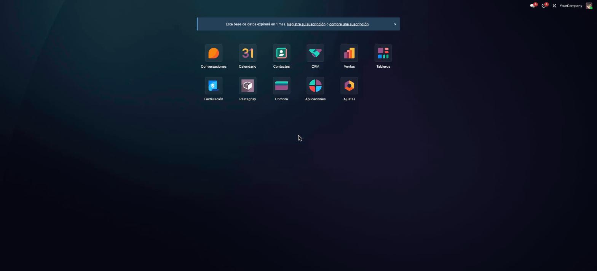
Parte A — Configuración inicial (administrador)
Se hace una vez, antes de que el equipo empiece a trabajar. Con el modo desarrollador activado (Ajustes → Herramientas para desarrolladores) se ven los menús técnicos.
A1. Ajustes del módulo
Ajustes → Restagrup
| Ajuste | Para qué sirve |
|---|---|
| Google Places API Key | Permite que el buscador traiga restaurantes nuevos por ciudad. Una vez guardada se muestra oculta. |
| Orden de proveedores IA · Groq API Key · Gemini API Key | Qué IA se usa (por defecto groq,gemini) y sus claves. Para leer correos, clasificarlos y proponer importes. Sin claves, todo funciona a mano. |
| Margen por defecto (%) | Lo que Restagrup suma al precio del restaurante (20 % por defecto). Con 0, el presupuesto sale a coste. Se aplica al crear el presupuesto de venta y queda congelado en cada línea. |
| Modo de envíos automáticos | Con aprobación (por defecto): los correos que genera el sistema esperan en «Pendientes de aprobar». Automático: salen solos. |
| Clasificación de correos entrantes | Activada: la IA clasifica cada correo del buzón central antes de crear nada (B1). Desactivada: todo correo crea un lead. |
| Remitente de los envíos del sistema | Desde qué dirección salen los correos que genera el sistema. Vacío = correo del usuario. |
| Usuario de alertas IA | Quién recibe la actividad cuando la IA falla, detecta una incidencia o el grupo no tiene responsable. |
| Texto del recordatorio de presupuesto | Mensaje a un restaurante que no responde pasados 3 días. Vacío = texto por defecto. |
| Días antes del servicio para reclamar · Texto del recordatorio a la agencia | Cuándo (14 por defecto) y con qué texto se reclama a la agencia que no responde al presupuesto. |
| Cambio de comensales que pide confirmación (%) | Por encima de este cambio el restaurante tiene que volver a confirmar (20 por defecto). Fecha y hora siempre piden confirmación. |
| Días antes del servicio para avisar de datos pendientes Solo en desarrollo | Cuándo se avisa internamente de lo que falta por cerrar (7 por defecto). |
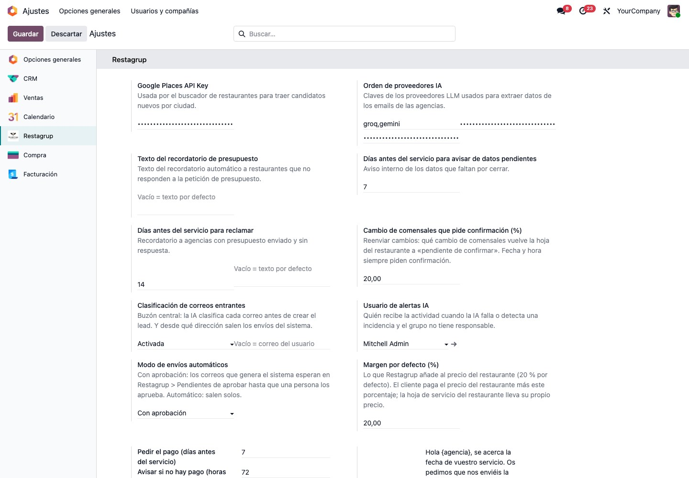
A2. Correo saliente y entrante
Ajustes → Técnico → Correo saliente y Correo entrante
Sin esto no sale ni entra ningún correo real.
- Servidor saliente (SMTP): host, puerto, cifrado, usuario y contraseña de la cuenta de envío. Pulsa Probar la conexión y envía un correo de prueba a una dirección propia. En Parámetros del sistema fija
mail.catchall.domainymail.default.from. Configura SPF, DKIM y DMARC del dominio para que no caiga en spam. - Buzón de peticiones (IMAP, «Crear un nuevo registro» = Lead/Oportunidad): recibe los correos de las agencias.
- Buzón de respuestas (IMAP, «Crear un nuevo registro» = Resultado del buscador de restaurantes): recibe las respuestas de los restaurantes, que se enlazan solas a su línea. Es también el remitente de los correos del sistema.
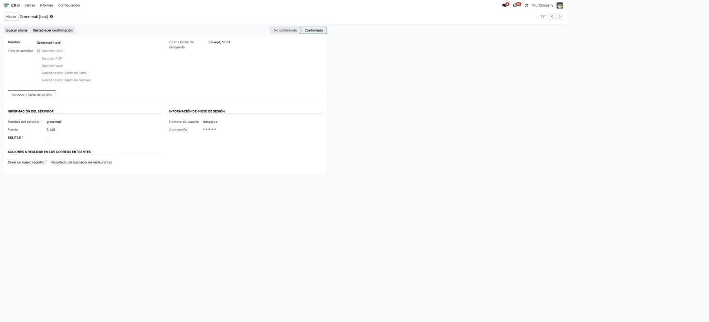
A3. Confirmación online: firma sí, pago no
Ajustes → Ventas → Presupuestos y pedidos
Deja activada «Firma en línea» y desactivado «Pago en línea». Así la agencia acepta el presupuesto desde el enlace firmando, sin que se le pida pagar. Odoo trae las dos activadas por defecto. Comprueba también que la URL base sea la de producción: los enlaces de firma y de comparativa se construyen con ella.
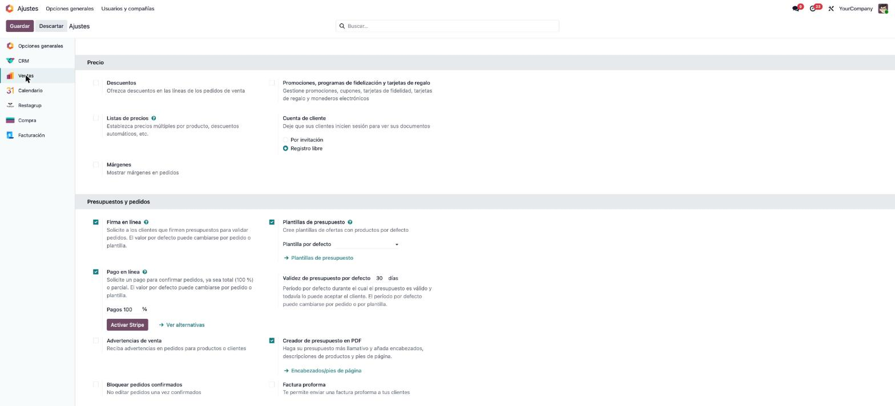
A4. Compañía y usuarios
Ajustes → Compañías y Usuarios y compañías → Usuarios
En la compañía rellena nombre, CIF/NIF, dirección, email, teléfono, web, logo y cuenta bancaria (sale en las confirmaciones a la agencia para el cobro). Da de alta a cada comercial con su email real (los correos salen con el email del usuario) y permisos de Ventas → Usuario; no hacen falta permisos de Compras, las hojas de servicio las genera el sistema. Asigna el impuesto «incluido en el precio» para que todos los importes sean con IVA incluido.
A5. Listas ampliables: tipos de evento, motivos de cancelación y plantillas de aviso
Restagrup → Tipos de evento · Motivos de cancelación · Plantillas de aviso
- Tipos de evento (Nuevo): vienen Desayuno, Aperitivo, Comida, Cena, Coffee break y Otro.
- Motivos de cancelación (Nuevo): vienen «El restaurante no puede», «Sustituido por otro más barato», «Sustituido por otro mejor» y «Otro».
- Plantillas de aviso (Nuevo): vienen «Cambio de comensales», «Cambio de fecha u hora», «Aviso general» y «Cancelación de servicio». Admiten las variables
{restaurante}{grupo}{evento}{fecha}{comensales}.
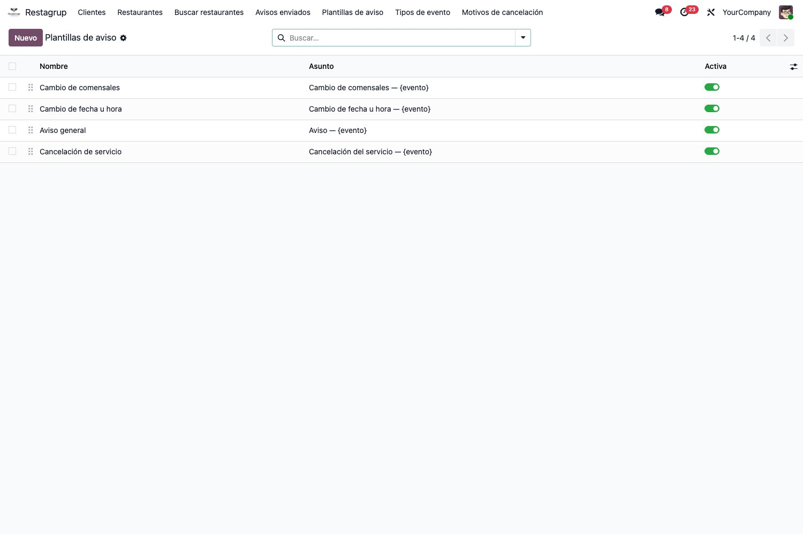
A6. Alta de restaurantes y de sus menús
Restagrup → Restaurantes y Menús
Un restaurante es un contacto marcado «Es restaurante». Su ficha se rellena en la pestaña Restaurante (ver E2): datos generales, aptitud, Datos de grupo y margen propio. Los restaurantes que encuentra Google se pueden guardar desde la tarjeta con Añadir como contacto.
Los menús se cargan en la pestaña Menús del restaurante o desde el menú Restagrup → Menús (filtros por población y temporada). Cada menú lleva tipo (Almuerzo, Buffet, Cena, Desayuno, Picnic, Show, Sin definir), temporada, mínimo y capacidad de comensales, bebidas incluidas, el precio de coste (lo que cobra el restaurante), el precio de venta (con el margen, editable) y el % de beneficio. El contenido se describe en Descripción (texto libre) y/o en Platos (con tipo — entrante, principal, postre, bebida, otro — y alérgenos). La pestaña Texto para propuesta es lo que ve la agencia. Se carga siempre el precio del restaurante.
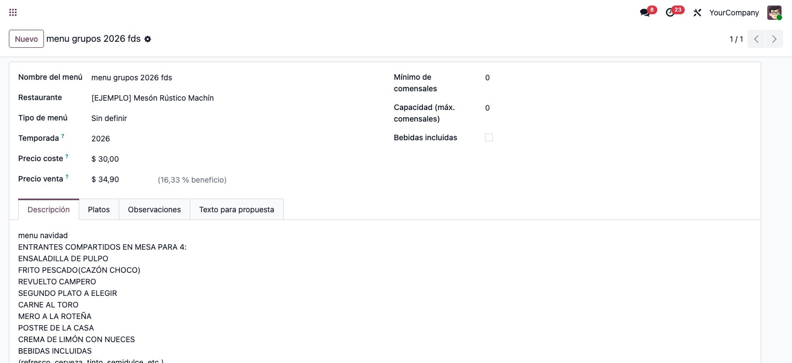
A7. Baremos de precio estimado Solo en desarrollo
Restagrup → Baremos de precio estimado
Cuando la agencia no da presupuesto, el evento muestra un precio por persona «Estimado» tomado de estos baremos. Cada baremo tiene tipo de evento, público (adultos, estudiantes, deportistas), día (cualquier día, entre semana, fin de semana), ciudad (opcional) y precio por persona con IVA. Una ciudad concreta tiene preferencia sobre el baremo general. Son orientativos: edítalos, archívalos o añade nuevos.
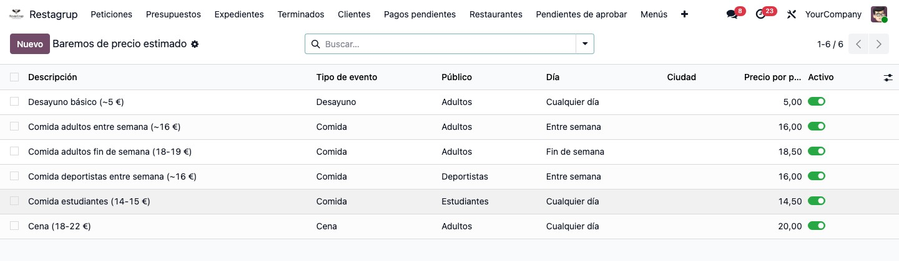
A8. Cortafuegos Solo en desarrollo
Restagrup → Cortafuegos
Cada fila es una comprobación que hace Odoo antes de un paso importante (la lista completa está en E5). Para cada una decides si está activa y qué pasa si falla: Avisar y consultar (muestra el aviso y permite «Continuar de todos modos») o Impedir. Dos son puntos de revisión y nunca bloquean (B4 y 6.6). Recomendación: empezar con todos activos y quitarlos uno a uno según se gane confianza.
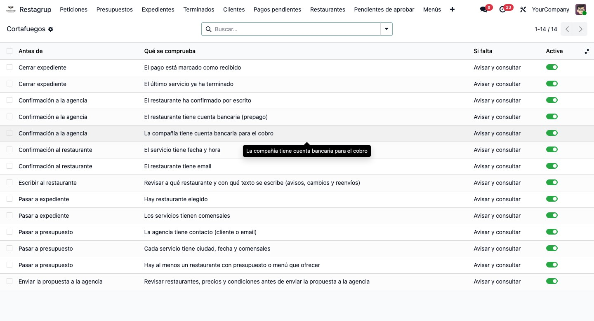
A9. Plazos y textos de pago Solo en desarrollo
Ajustes → Restagrup (final de la página)
| Ajuste | Efecto |
|---|---|
| Pedir el pago (días antes del servicio) | Fecha en que se pide el pago a la agencia (7 por defecto). |
| Avisar si no hay pago (horas antes) | Fecha del aviso urgente si sigue sin pago (72 h). |
| Pagar a los restaurantes (horas antes) | Fecha límite para pagar a los restaurantes (48 h). |
| Comensales finales (horas laborables antes) | Cuándo hay que tener el número definitivo (48 h). |
| Facturar (días máx. tras el último servicio) | Fecha límite para facturar (7 días). |
| Texto: pedir el pago · Texto: recordatorio urgente | Mensajes que se copian a cada presupuesto y se pueden editar allí. |
Odoo calcula las fechas y avisa; los pagos los gestionáis vosotros, Odoo no cobra.
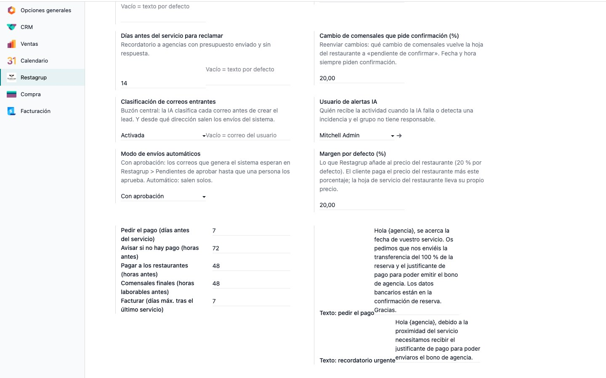
Parte B — El día a día, fase por fase
El grupo avanza por Petición (PET) → Presupuesto (PRE) → Expediente (EXP) → Cerrado. Solo en desarrollo las listas por fase (Peticiones, Presupuestos, Expedientes, Terminados) y la numeración. En producción el grupo es una oportunidad de CRM con su pipeline.
1 · Entra la petición
1.1 Llega el correo de la agencia
Restagrup → Peticiones (o CRM)
Con la clasificación activada, la IA lee cada correo del buzón central antes de crear nada y lo clasifica como: petición nueva, cambio de un grupo, respuesta de agencia, factura, incidencia u otro. Solo las peticiones nuevas crean un lead (y ante la duda, se trata como petición nueva). Los cambios y respuestas se enlazan al grupo que corresponde (6.1); lo demás va a Correos por revisar (D4). Las respuestas de restaurantes a un hilo existente siguen su camino y no se clasifican.
1.2 Revisar los datos que extrajo la IA
Lead → pestaña Datos IA
Muestra ciudad, nº de comensales, fecha de servicio y tipo de grupo, junto al estado de la extracción y el proveedor de IA usado. Revísalos antes de seguir: si la IA no está segura de un dato, lo deja vacío para que lo rellenes tú, nunca se lo inventa. Los datos pueden corregirse a mano. En el lead también ves el número de documento, la agencia, la fecha y población del primer servicio y las peticiones de datos enviadas.
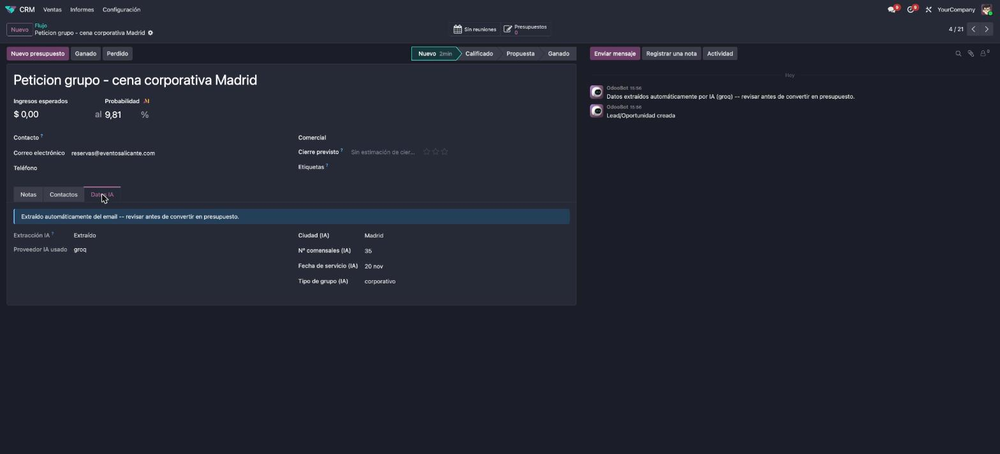
1.3 Varios eventos en un mismo grupo
Lead → pestaña Eventos
Una agencia puede pedir en un solo correo varias comidas o cenas en distintas ciudades y fechas. La IA propone un evento por cada uno (ciudad, fecha, tipo, público, comensales, notas) como borrador: una persona los revisa. Hasta 20 por correo; un correo con un solo lugar crea un solo evento. Puedes añadir o corregir a mano con «Añadir una línea». Cada evento tiene su botón Buscar y arriba hay «Buscar para todos los eventos». La tabla muestra por evento el restaurante elegido, el importe, el presupuesto de venta y el estado de la hoja de servicio.
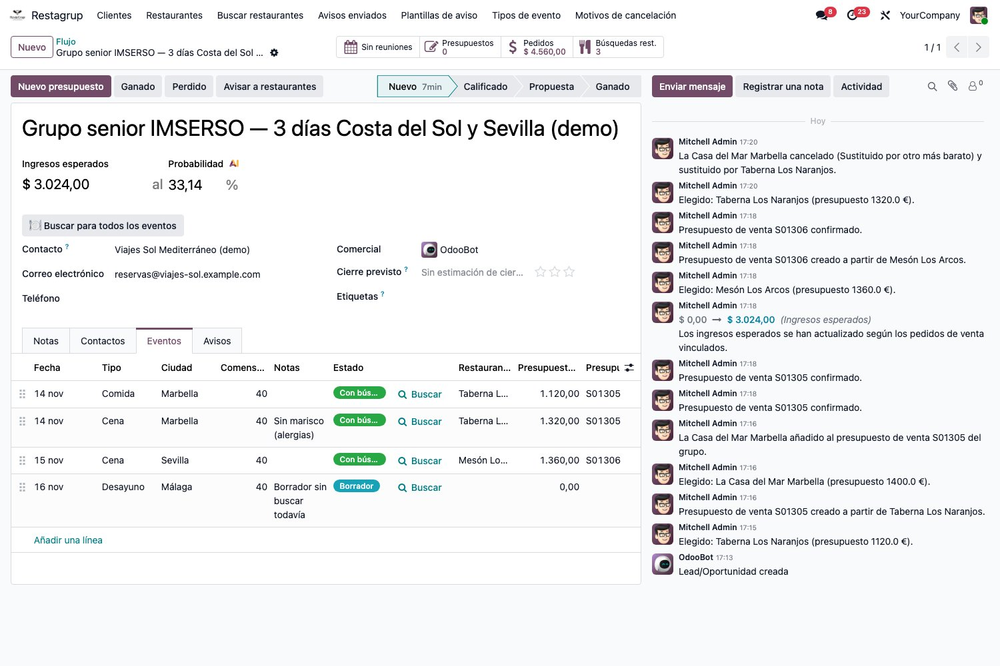
1.4 Si la petición llega incompleta
Odoo prepara un correo a la agencia pidiendo solo lo que falta (fecha, ciudad, comensales). Sale por la cola de aprobación (D1) y por el mismo hilo de la petición. Cuando la agencia contesta, la IA rellena el lead sin pisar lo que ya estaba. Se piden datos como máximo dos veces; después, una persona se encarga. Si la petición ya está completa, nadie tiene que revisarla.
1.5 Precio estimado si no hay presupuesto Solo en desarrollo
Lead → pestaña Eventos → columnas Precio/persona y Estimado
Si la agencia no indica presupuesto, el evento muestra un precio por persona «Estimado» (por ejemplo 16 € para una comida de adultos entre semana) sacado de los baremos (A7). No bloquea la petición; cámbialo a mano cuando se sepa el real (deja de estar marcado como estimado). Si la fecha llega después, el estimado se calcula entonces.
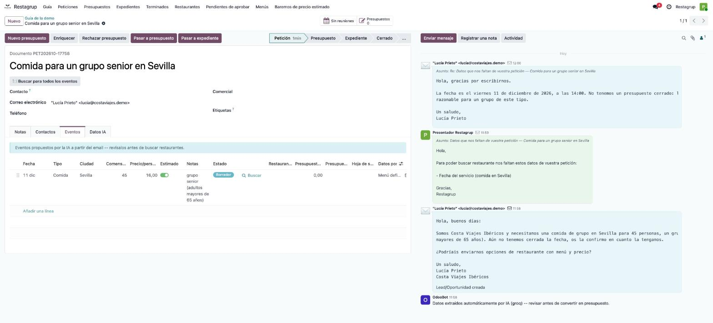
1.6 Pasar de fase y cortafuegos Solo en desarrollo
Lead → botones Pasar a presupuesto · Pasar a expediente · Cerrar expediente
Pasar de fase manualmente dispara las comprobaciones del cortafuegos (E5): por ejemplo, para pasar a Presupuesto la agencia debe tener contacto, cada servicio ciudad, fecha y comensales y debe haber un restaurante que ofrecer. Si algo falla, una ventana lo explica; según el modo puedes Continuar de todos modos o Volver a revisar. El grupo también avanza solo: al firmar la agencia pasa a Expediente (5.1).
2 · Buscar restaurantes
2.1 Lanzar la búsqueda
Lead o evento → botón Buscar (o Buscar para todos los eventos)
Campos: ciudad, calle y código postal (afinan la geolocalización), aforo mínimo, parking de autobús, tipo de cocina, precio máximo (€ a €€€€), notas, y el tipo de local a buscar:
restaurantes, bares/tascas, cafeterías y comida rápida (cada tipo marcado lanza su propia búsqueda y se deduplica). El buscador combina los restaurantes ya guardados en Odoo con resultados en vivo de Google Places.
Un grupo puede tener una búsqueda por evento; el nombre indica ciudad, comensales, tipo y fecha, por ejemplo Marbella · 40 pax · Comida · 14/11.
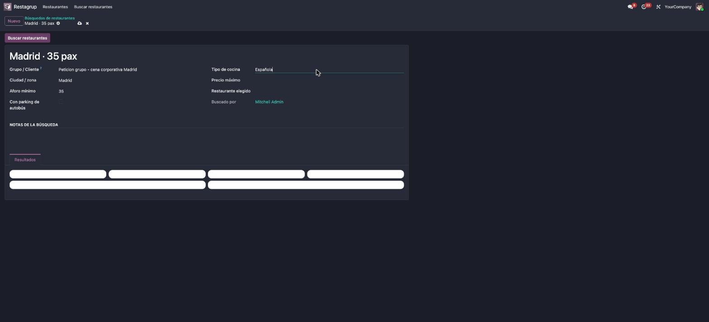
2.2 Leer las tarjetas y ordenar
Búsqueda → pestaña Resultados
Cada tarjeta muestra: valoración de Google, tipo de cocina, nivel de precio, aforo, parking de autobús y aptitud (corporativo / escolar / familiar); botones Maps, teléfono y Email; notas internas; y avisos: «Aforo 25 < 40 pax», «Cierra los martes (evento en ese día)», «✓ Ya trabajado» (ya hubo un servicio real con él), «Ficha incompleta · faltan…» y «⚠ N días sin respuesta». Cada tarjeta lleva su etiqueta de estado (ver E3). El desplegable Ordenar por + Aplicar reordena: por defecto, mejor valorados, precio más barato o más caro, mayor aforo, nombre A-Z. La barra de progreso de arriba (Buscando → Presupuestos pedidos → Presupuestos recibidos → Elegido) se calcula sola; al crear el presupuesto de venta llega a «Presupuesto de venta creado».
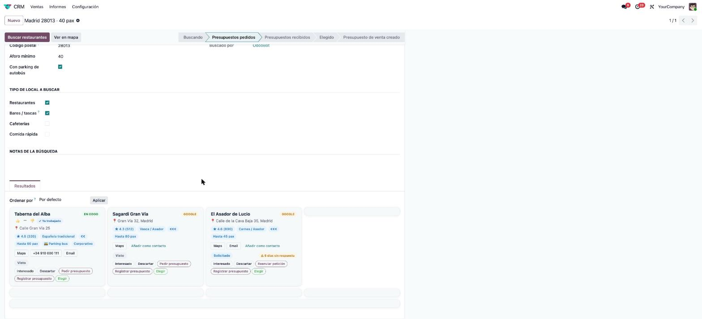
2.3 Marcar candidatos y valorar
Tarjeta → Interesado · Descartar · 👍 ➖ 👎 · Añadir como contacto
- Interesado marca el candidato como posible; Descartar lo aparta de la lista de candidatos.
- 👍 Nos gustó · ➖ Neutral · 👎 No repetir guardan una valoración interna en la ficha del restaurante, que se conserva para futuras búsquedas.
- Añadir como contacto guarda en Odoo un restaurante que solo estaba en Google.
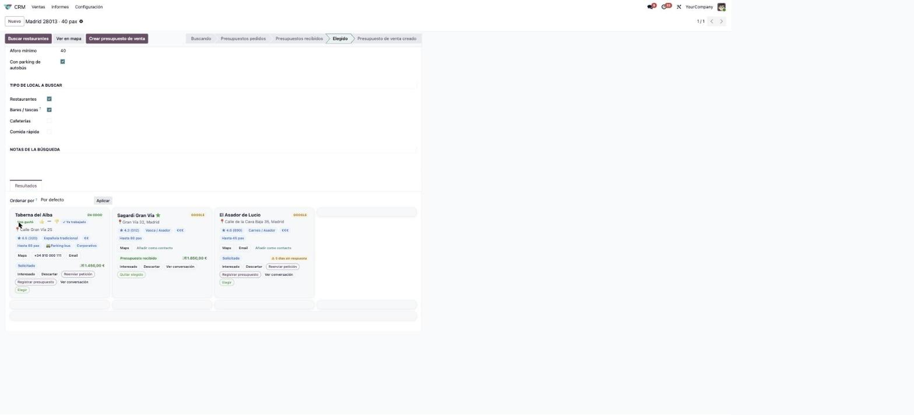
2.4 Ver el mapa
Búsqueda → botón Ver en mapa
Abre un mapa con todos los resultados que tengan coordenadas. Cada marcador abre la misma tarjeta con los mismos botones (pedir presupuesto, elegir…) y su color indica el estado: naranja/rojo pendiente, verde el elegido.
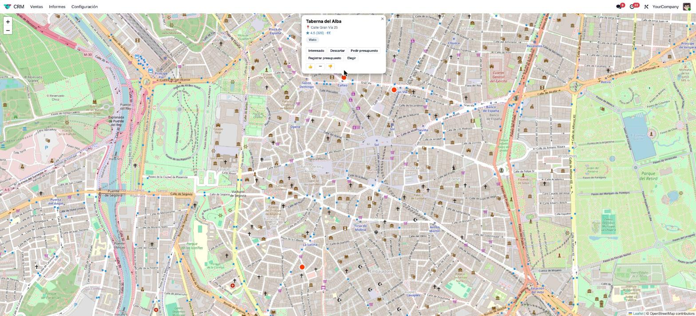
2.5 Completar la ficha de un restaurante
Tarjeta → Pedir datos que faltan · Restaurantes → ficha → pestaña Restaurante
El bloque Datos de grupo reúne gratuidades, responsable de grupos, móvil del responsable, canal preferido, día de cierre, idioma, aforo, parking y cuenta bancaria. Si falta alguno, la ficha muestra «Ficha incompleta · faltan …». Pedir datos que faltan manda al restaurante un correo (por la cola de aprobación) con solo lo que no está. Cuando contesta, la IA propone los datos: la tarjeta muestra «🤖 Datos propuestos por IA, sin confirmar» con Aplicar y Descartar; nunca se escriben solos. Un restaurante nuevo sin cuenta bancaria también la recibe en esa petición.
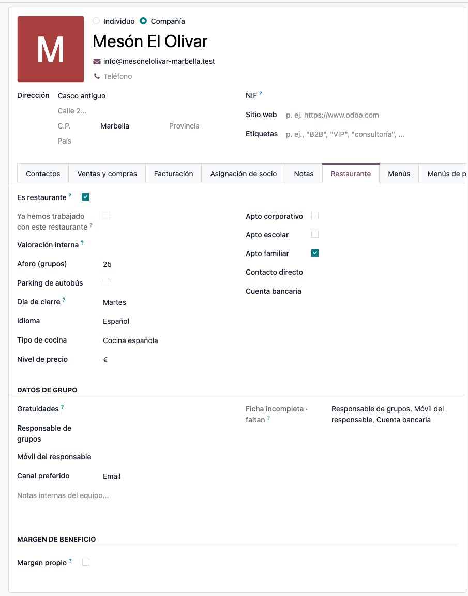
3 · Pedir presupuestos a los restaurantes
3.1 Pedir presupuesto
Tarjeta → Pedir presupuesto
Odoo manda un correo al restaurante con los datos del grupo, con un identificador de seguimiento propio, y lo registra en el historial de la línea. La tarjeta pasa a Solicitado. Si el resultado no tiene email, Odoo avisa («Este resultado no tiene email de contacto»): usa Añadir como contacto o edita su ficha con el email antes de pedir presupuesto. Si prefieres llamar, registra la respuesta a mano (3.3).
3.2 La respuesta llega sola
Tarjeta → Ver conversación
Si el buzón de respuestas está configurado (A2), la respuesta se enlaza sola a su línea. La IA lee el importe, el menú y las notas y los propone: la tarjeta lo marca en naranja «propuesto por IA, sin confirmar». La respuesta se conserva como correo adjunto en la conversación.
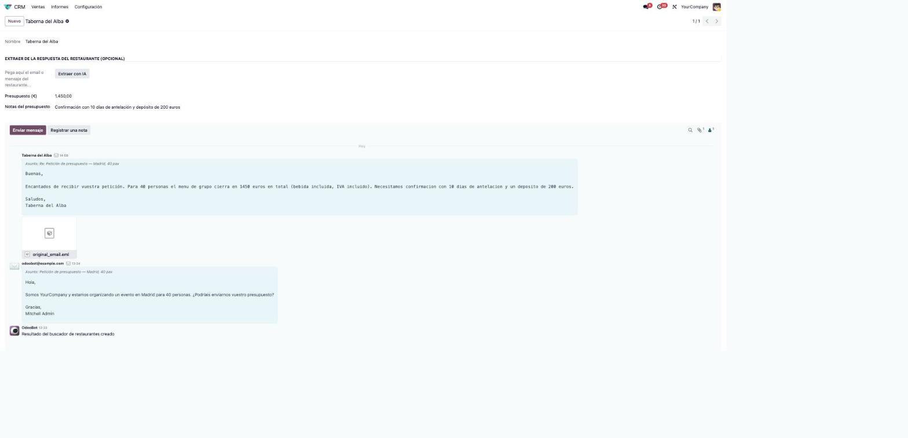
3.3 Confirmar o registrar el importe
Tarjeta → Confirmar presupuesto · Registrar presupuesto · Búsqueda → pestaña Presupuestos
- Confirmar presupuesto (un clic) da por bueno el importe propuesto por la IA, tras leer la conversación. Cada confirmación o corrección queda en el registro de IA.
- Registrar presupuesto abre un diálogo para escribir importe y notas a mano (si la respuesta llegó por teléfono o WhatsApp). Pega el texto y pulsa Extraer con IA para que proponga importe y notas; revisa y pulsa Registrar.
- La pestaña Presupuestos lista solo los restaurantes con presupuesto, del más barato al más caro, con el importe del restaurante, el precio al cliente (con margen), la fecha de recepción y las notas; desde ahí se puede Confirmar, Elegir o abrir la conversación.
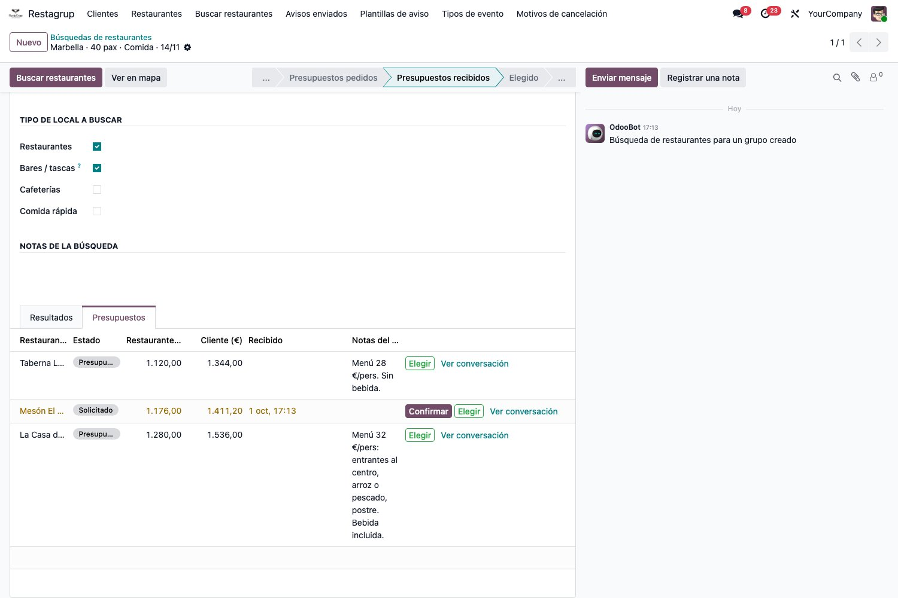
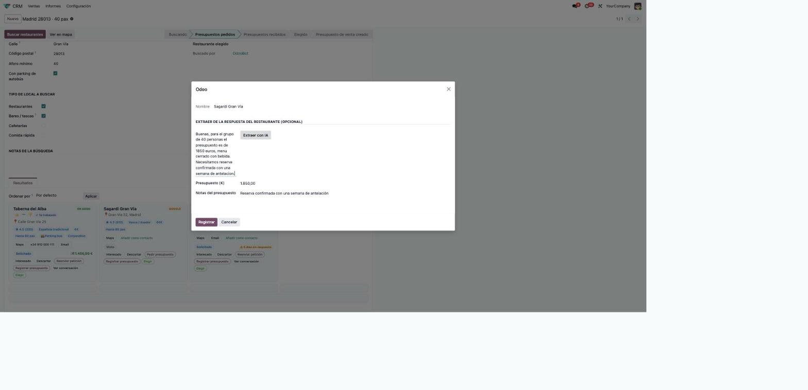
3.4 Restaurantes que no responden
Tarjeta → Reenviar petición · Restagrup → Pendientes de aprobar
A los 3 días sin respuesta la tarjeta muestra «⚠ N días sin respuesta». Cada día Odoo prepara un solo recordatorio por petición (texto en A1), que queda en la cola de aprobación (D1). El botón Reenviar petición manda la petición completa a mano y reinicia el contador.
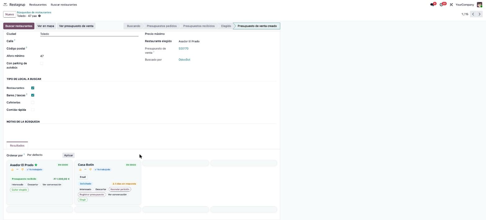
3.5 Elegir restaurante
Tarjeta → Elegir · Quitar elegido
«Elegir» pasa la búsqueda a Elegido (★ verde en el mapa) y habilita Crear presupuesto de venta. Si pulsas Elegir sobre un importe propuesto por la IA sin confirmar, se abre «Registrar presupuesto y elegir» y se confirma y elige de una vez. Sin presupuesto, Elegir se bloquea con un mensaje claro. Quitar elegido deshace la elección. Solo puede haber un elegido por búsqueda.
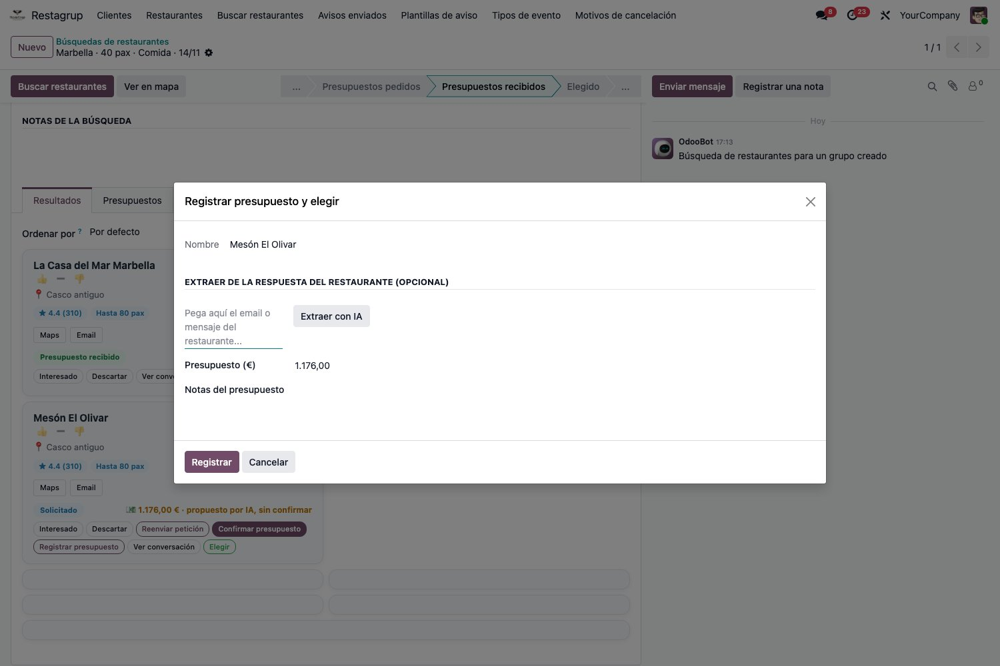
4 · Propuesta y presupuesto para la agencia
4.1 Enviar la comparativa a la agencia Solo en desarrollo
Búsqueda → Enviar comparativa al cliente · Comparativa para el cliente (PDF)
Con varios restaurantes con presupuesto, el asistente pide Para (email de la agencia), Asunto, Mensaje y la casilla «Incluir enlace de portal». Se envía un PDF con el menú y el precio por persona de cada opción, sin totales. «Comparativa para el cliente» genera solo el PDF. Con un cliente nuevo puedes ocultar los nombres («Opción 1, 2, 3») quitando «Restaurante visible».
Antes de enviar sale una ventana «Antes de continuar» con lo que va a salir y a quién (restaurantes, precios, menús, nombres visibles, enlace de portal). Una persona pulsa «Revisado: enviar» y queda una nota «X ha revisado y continúa». Se puede desactivar en el cortafuegos (A8).
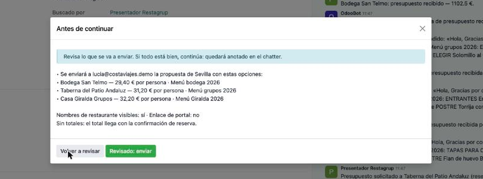
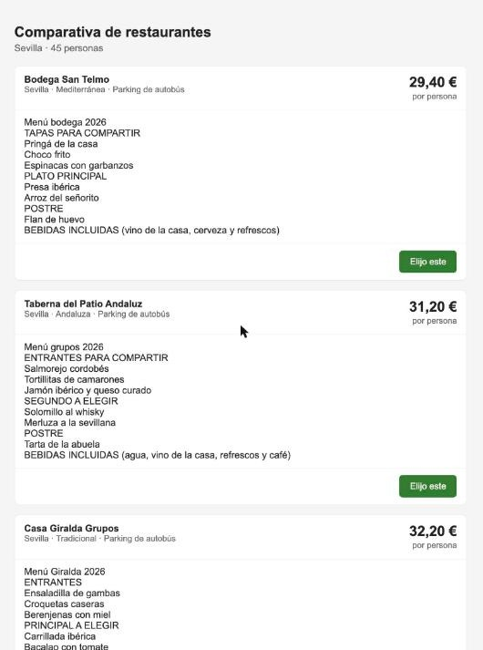
4.2 La agencia elige desde el portal Solo en desarrollo
El enlace de portal abre una página pública (sin usuario) con las opciones. La agencia pulsa «Elijo este»: Odoo marca ese restaurante como elegido y deja una nota en el lead («El cliente ha elegido… desde el portal»). Solo vale la primera elección; si ya hay uno elegido, la página lo muestra. Tras la elección, el siguiente paso lo das tú: Crear presupuesto de venta.
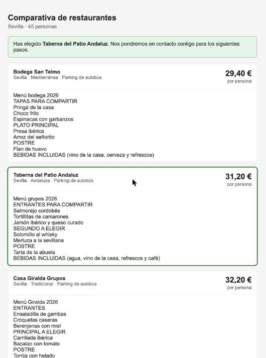
4.3 Crear el presupuesto de venta
Búsqueda → Crear presupuesto de venta · Ver presupuesto de venta
- Si el restaurante tiene menús, un asistente deja marcar los menús que irán al presupuesto y la cantidad de cada uno (por defecto, el aforo mínimo); cada menú es una línea, con el precio del restaurante y el del cliente a la vista. Sin menús, sale una sola línea con el importe del presupuesto.
- Cada línea lleva restaurante, fecha, hora, tipo de evento y gratuidades; la casilla «Incluir en propuesta» decide si sale en el PDF de propuesta.
- Para el equipo: coste del restaurante, % de margen y margen en € por línea, con totales de coste y margen. El margen queda congelado por línea: si cambias el margen en Ajustes, los presupuestos ya creados no se recalculan. Un restaurante con margen propio usa el suyo.
- Para la agencia: solo el precio con margen incluido. El coste nunca se ve. Si activas el interruptor «Mostrar margen al cliente», el PDF y el portal añaden bajo los totales «Incluye Gestión Restagrup (X %)».
- La búsqueda pasa a «Presupuesto de venta creado» y el botón arriba cuenta «Restaurantes confirmados N/M».
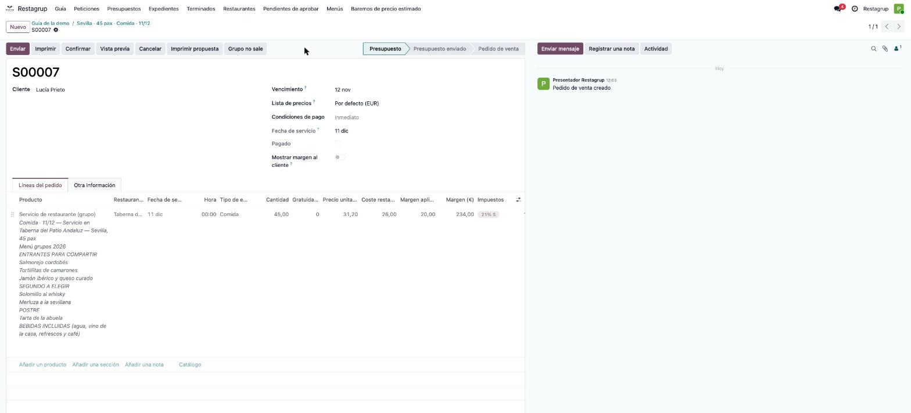
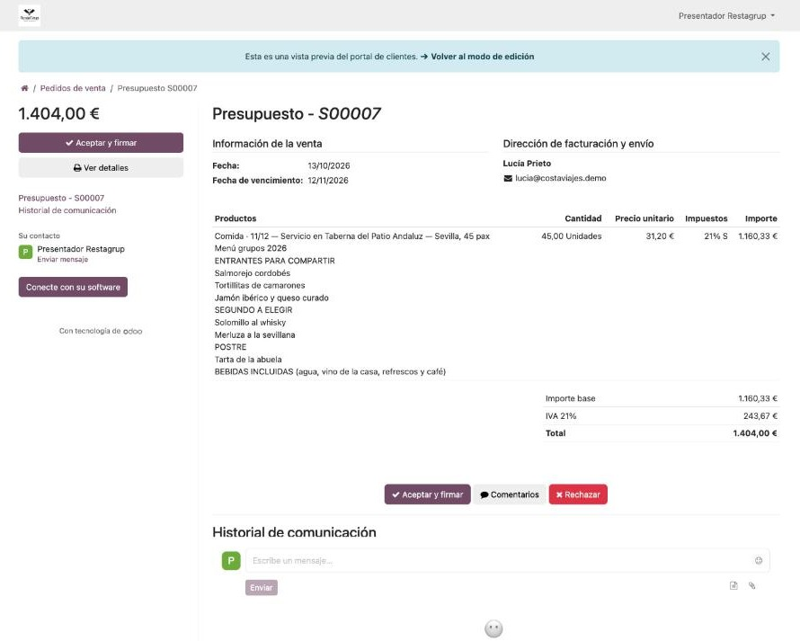
4.4 Varios eventos y presupuesto adicional
Al elegir restaurante en el siguiente evento del grupo, la línea se añade al mismo presupuesto mientras no esté firmado (borrador o enviado) y el total se acumula solo; si ya estaba enviado, queda una nota para recordar que hay que volver a mandarlo. Si el presupuesto ya está confirmado, Odoo no lo toca y crea un presupuesto adicional que la agencia firma aparte, con un aviso azul («Presupuesto adicional del grupo: el primero es S…»). Cada presupuesto genera sus propias hojas de servicio; un restaurante en los dos recibe dos hojas con su fecha.
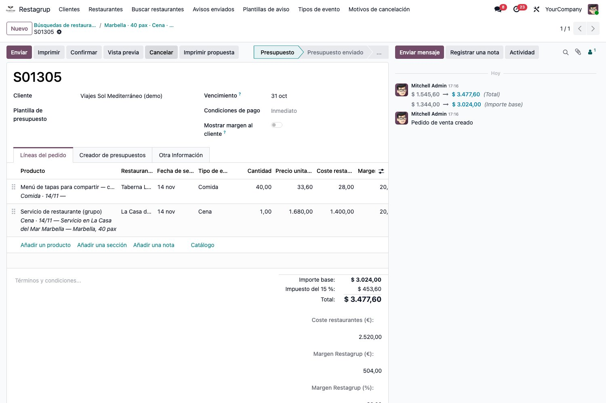
4.5 Imprimir la propuesta
Presupuesto → Imprimir propuesta
Genera un PDF agrupado por restaurante, listo para mandar al cliente final, con las líneas marcadas «Incluir en propuesta». Es el informe «Propuesta de restaurantes». No muestra la nota de margen ni agrupa por evento (ver E6).
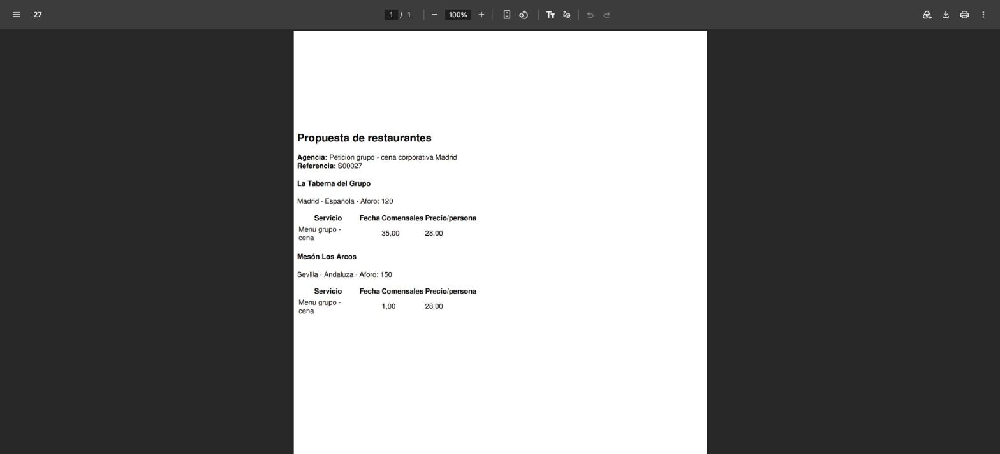
4.6 Si la agencia no contesta
Restagrup → Presupuestos sin respuesta
Lista los presupuestos enviados sin respuesta, con la fecha de servicio, los días que faltan, el último contacto y si ya se recordó. Cuando faltan los días fijados en A1 (14 por defecto), Odoo prepara un recordatorio a la agencia en la cola de aprobación (uno por presupuesto). Si la agencia avisa de que el grupo no viaja, usa Grupo no sale (caso C11).
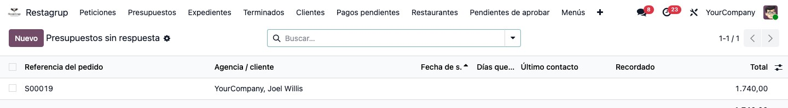
5 · Firma y expediente
5.1 La agencia firma
La agencia abre el enlace del correo, revisa el presupuesto y lo acepta con su firma, sin usuario en Odoo. El enlace empieza por la dirección de producción. Al firmar, el pedido se confirma, el grupo pasa a Expediente Solo en desarrollo y se genera una hoja de servicio por cada restaurante.
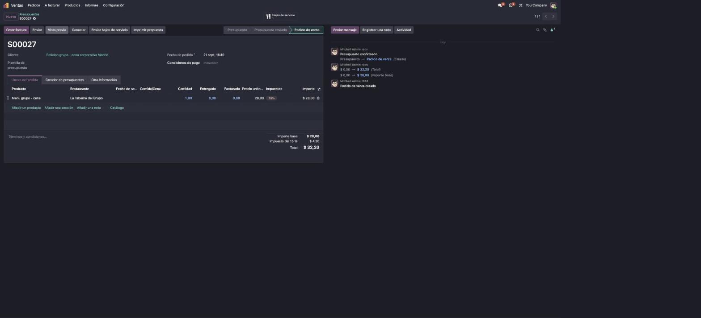
5.2 Hojas de servicio
Presupuesto → botón Hojas de servicio · Enviar hojas de servicio
Cada hoja (un pedido de compra) lleva los datos del restaurante, fecha, comensales y su precio (nunca el de la agencia). Enviar hojas de servicio manda la petición formal a cada restaurante. En la hoja ves la respuesta del restaurante clasificada por la IA — Aceptado, Rechazado, Falta información, Incidencia grave, No está claro — con un resumen. La IA solo informa: nunca cambia el estado del pedido; una incidencia grave avisa a una persona. El botón del presupuesto «N/M confirmados» cuenta las hojas aceptadas (rechazado, sin información o poco claro cuentan como pendiente; las canceladas no cuentan). Desde la hoja, el botón Presupuesto vuelve al presupuesto de origen. Un presupuesto puede tener varios restaurantes: cada uno genera su hoja de forma independiente.
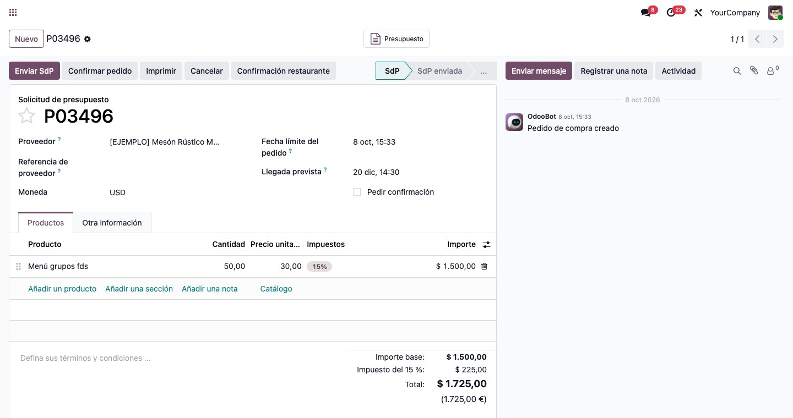
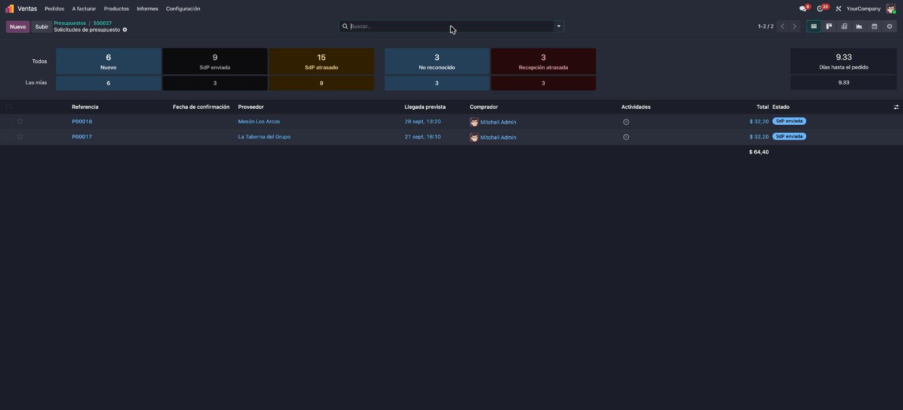
5.3 Gratuidades Solo en desarrollo
Presupuesto → línea → columna Gratuidades
Guía y chófer no pagan pero cuentan como comensales: con 43 de pago y 2 gratuidades son 45 comensales. La gratuidad se aplica por línea y las confirmaciones y el bono la reflejan. Cada restaurante puede tener su política de gratuidades en la ficha.
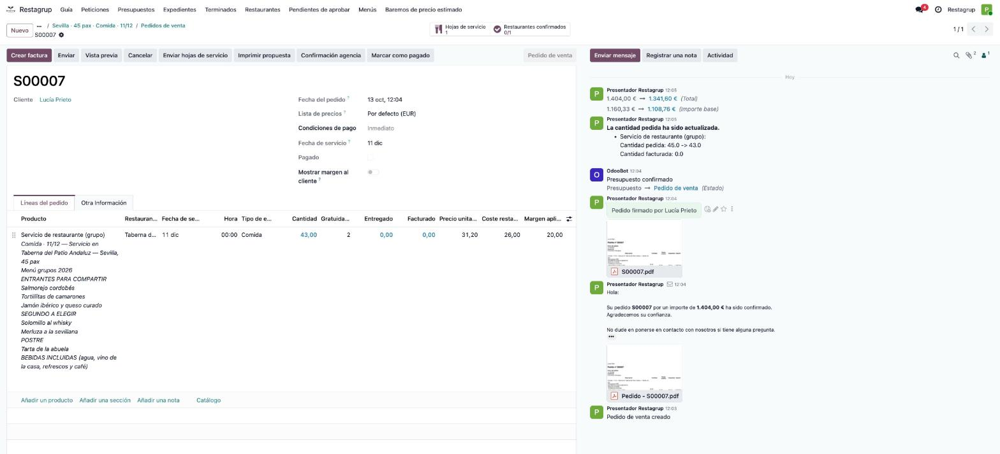
5.4 Confirmaciones de reserva Solo en desarrollo
Presupuesto → Confirmación agencia · Hoja de servicio → Confirmación restaurante
Se confirma a la agencia solo cuando el restaurante ha confirmado por escrito (cortafuegos). La confirmación a la agencia lleva el precio de venta (43 + 2 gratuidades), las observaciones y los datos de pago (cuenta de la compañía). La confirmación al restaurante lleva su precio, sin margen. El cortafuegos avisa si el servicio no tiene fecha y hora o el restaurante no tiene email.
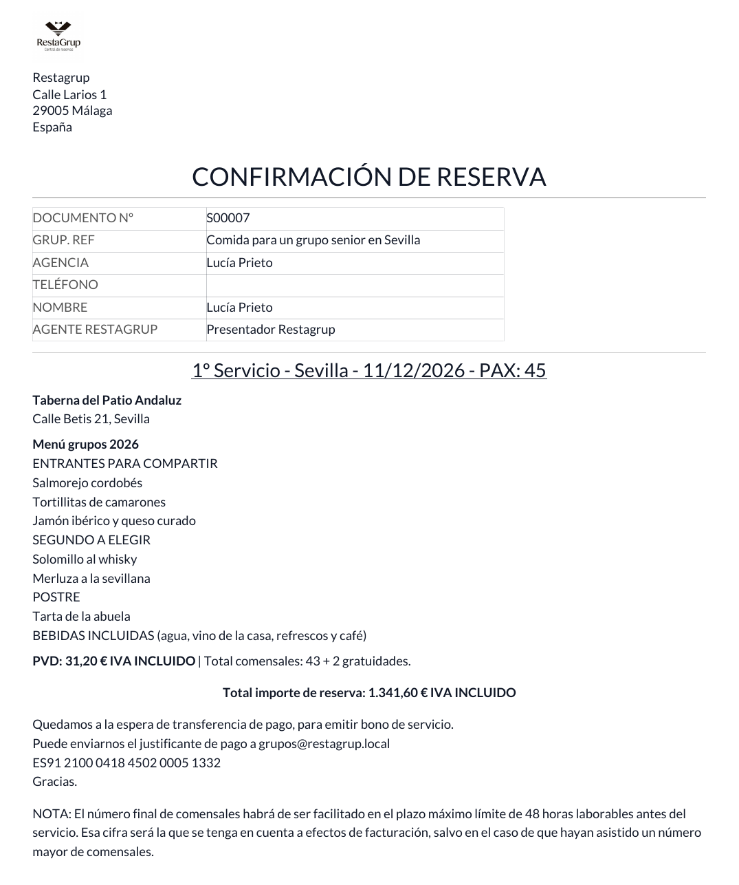
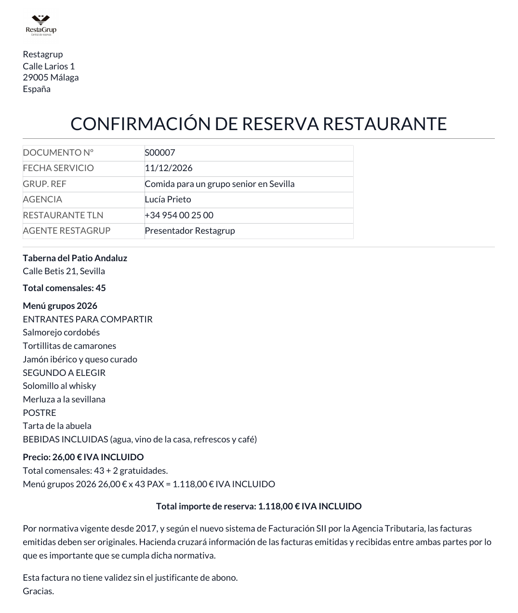
5.5 Pagos y bono de servicio Solo en desarrollo
Presupuesto → Marcar como pagado · Desmarcar pago · Bono de agencia · Restagrup → Pagos pendientes
En Plazos de pago del presupuesto se calculan las fechas: pedir el pago, aviso si no hay pago, pagar a restaurantes y facturar antes de (según A9), con los textos editables. Pagos pendientes lista los pedidos confirmados sin cobrar por fecha del primer servicio. Al marcar como pagado (con fecha de pago) se habilita el bono de agencia, con el sello PAGADO y sin ningún precio; es el documento que viaja con el grupo. «Desmarcar pago» lo revierte. En «Observaciones» se anota lo que debe salir en la confirmación.
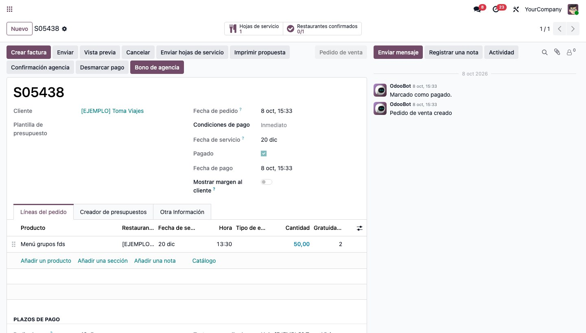
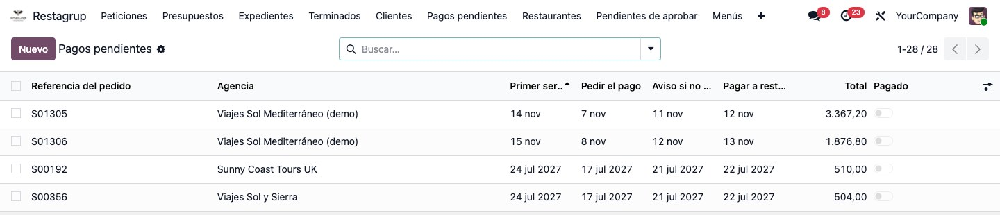
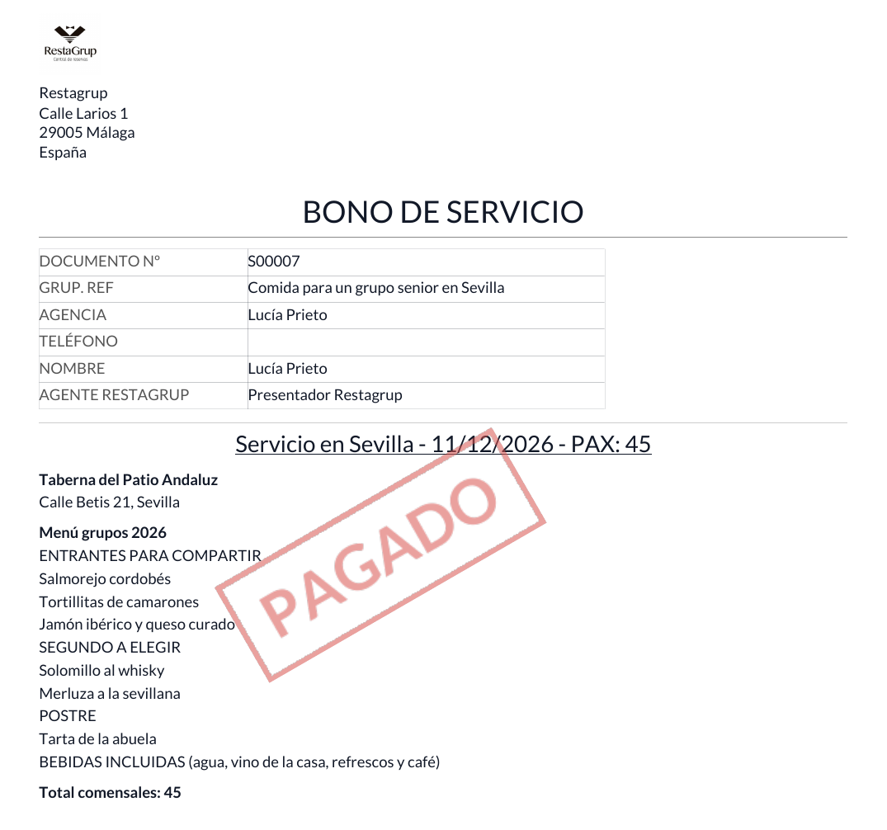
6 · Cambios y cancelaciones
6.1 La agencia cambia algo (enlace automático)
Cuando una agencia escribe para cambiar un grupo, Odoo busca a cuál se refiere, por este orden: 1) la referencia del grupo; 2) si el remitente solo tiene un grupo abierto, ese; 3) el nombre del grupo en el asunto; 4) la ciudad y la fecha que lee la IA; 5) si aún hay varios candidatos, la IA elige entre ellos. Si nada basta, el correo va a Correos por revisar y no se asigna a ciegas. El cambio queda anotado en la conversación del lead correcto.
6.2 Reenviar cambios
Presupuesto → botón amarillo Reenviar cambios (hoja con «Cambios pendientes de reenviar»)
Aparece cuando cambian los datos (comensales, fecha, hora, líneas) después de confirmar; no genera hojas duplicadas. El mensaje incluye un resumen de lo que ha cambiado («comensales 47 → 51») y se envía a los restaurantes afectados y, desde la actualización de septiembre, también el presupuesto actualizado a la agencia; queda anotado en ambas conversaciones. Si la agencia no tiene email, los restaurantes reciben igualmente los cambios y Odoo deja una nota para contactar con la agencia a mano. Antes de enviar hay una revisión (6.6).
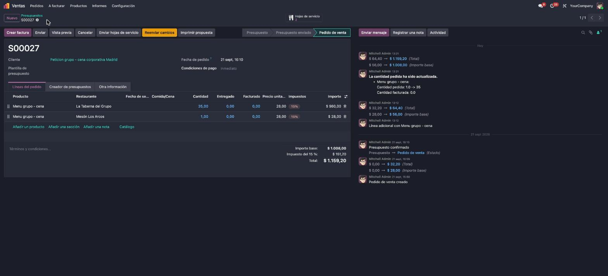
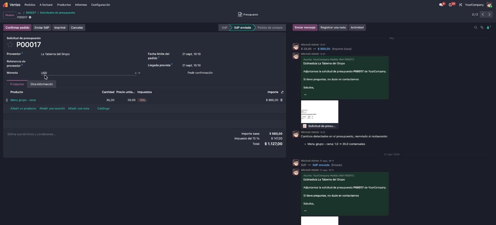
6.3 Cuándo el restaurante tiene que volver a confirmar
Un cambio es significativo si cambia la fecha o la hora, o si los comensales varían más del porcentaje fijado en A1 (20 % por defecto). Entonces la hoja del restaurante vuelve a «pendiente de confirmar» y el restaurante debe contestar otra vez. Un cambio pequeño de comensales se avisa sin pedir nueva confirmación.
6.4 Avisar a los restaurantes de un grupo
Lead → Avisar a restaurantes · Restagrup → Avisos enviados
El asistente lista los restaurantes del grupo (uno por evento elegido) con su evento, si tienen email y por qué hilo sale (la hoja de servicio o, si no hay, la petición de presupuesto). Marca a quién avisar, elige una plantilla o escribe texto libre, y pulsa Enviar avisos. Las variables se rellenan solas para cada restaurante. La agencia no recibe nada.
Cada aviso queda en la pestaña Avisos del lead y en Avisos enviados, con su estado (pendiente o respondido), la fecha, el extracto de la respuesta y un resumen de la IA. Una respuesta se enlaza al aviso solo si el restaurante contesta al mismo correo.
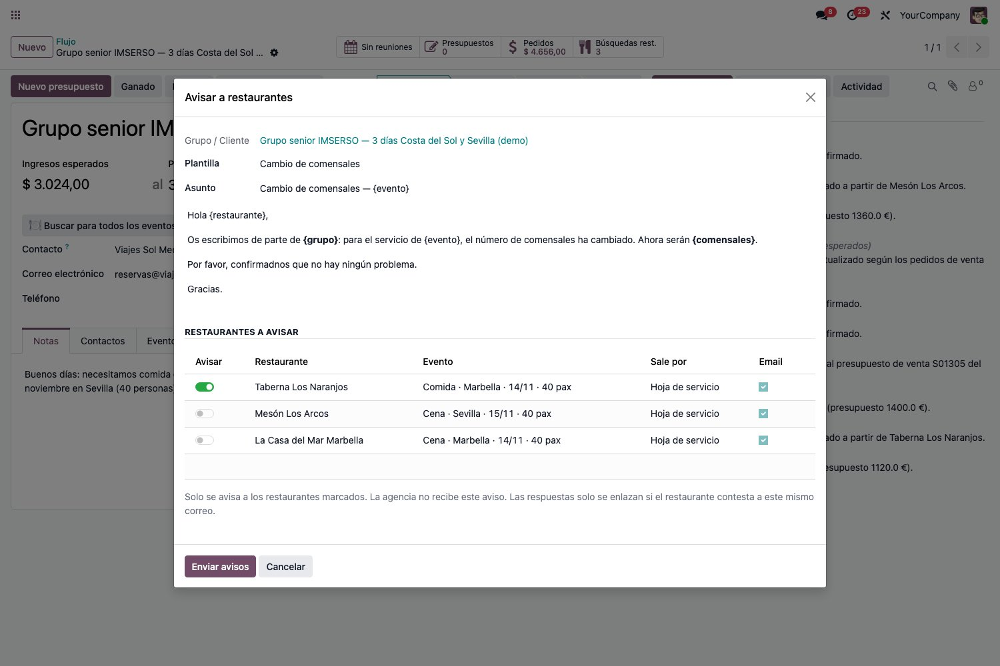
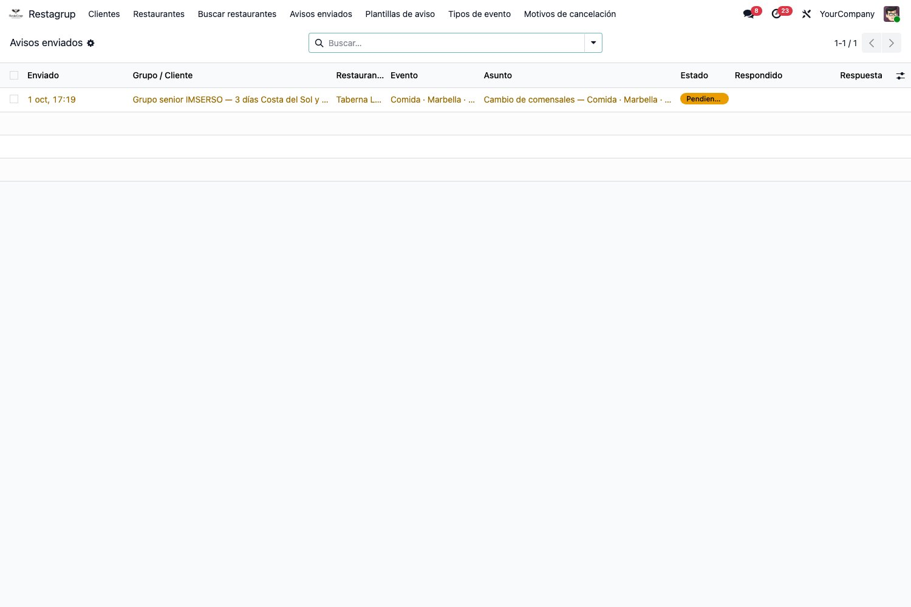
6.5 Cancelar o cambiar un restaurante
Búsqueda del evento → Cancelar / cambiar restaurante
Es un asunto entre Restagrup y el restaurante: la agencia no vuelve a firmar. El asistente pide Motivo y Nota, y opcionalmente un sustituto entre los restaurantes con presupuesto. Por defecto el presupuesto se ajusta al precio del nuevo restaurante; con «Mantener el precio al cliente» cambian solo el coste y el margen. Con «Avisar al restaurante cancelado» eliges plantilla (por defecto «Cancelación de servicio») o texto libre. El cancelado queda marcado Cancelado (con motivo, nota y fecha), su hoja de servicio pasa a cancelada y se genera la del sustituto. Todo queda anotado en la conversación de la búsqueda.
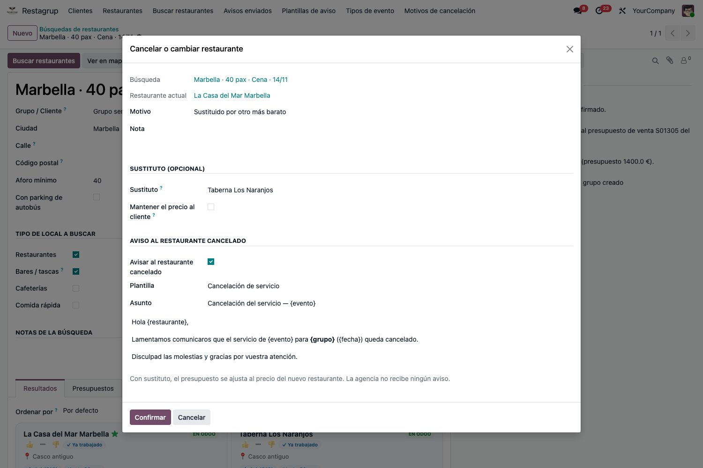
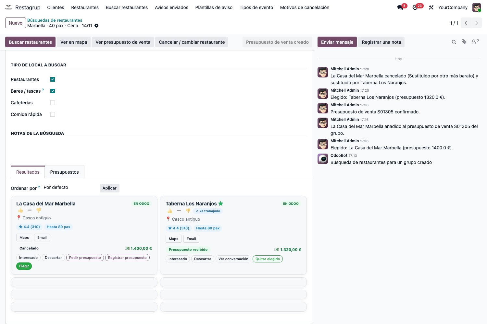
6.6 Revisión antes de escribir a un restaurante Solo en desarrollo
En Reenviar cambios, Avisar a restaurantes y cambiar o cancelar restaurante con aviso, una ventana «Antes de continuar» enseña a quién se escribe y el texto exacto, con los datos reales del grupo ya rellenados (restaurante, fecha, comensales). Si es correcto, pulsa «Revisado: enviar»; queda anotado quién lo revisó. Nunca bloquea. Se desactiva en el cortafuegos (A8).
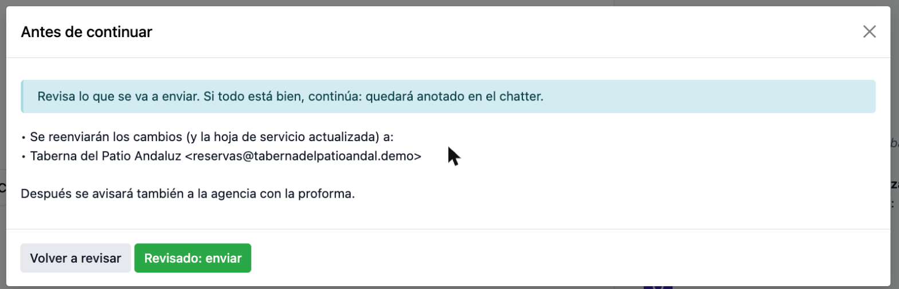
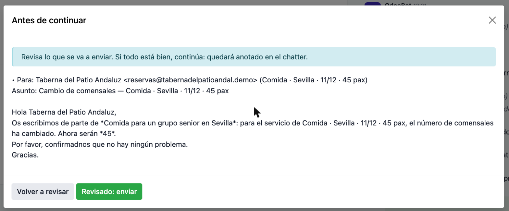
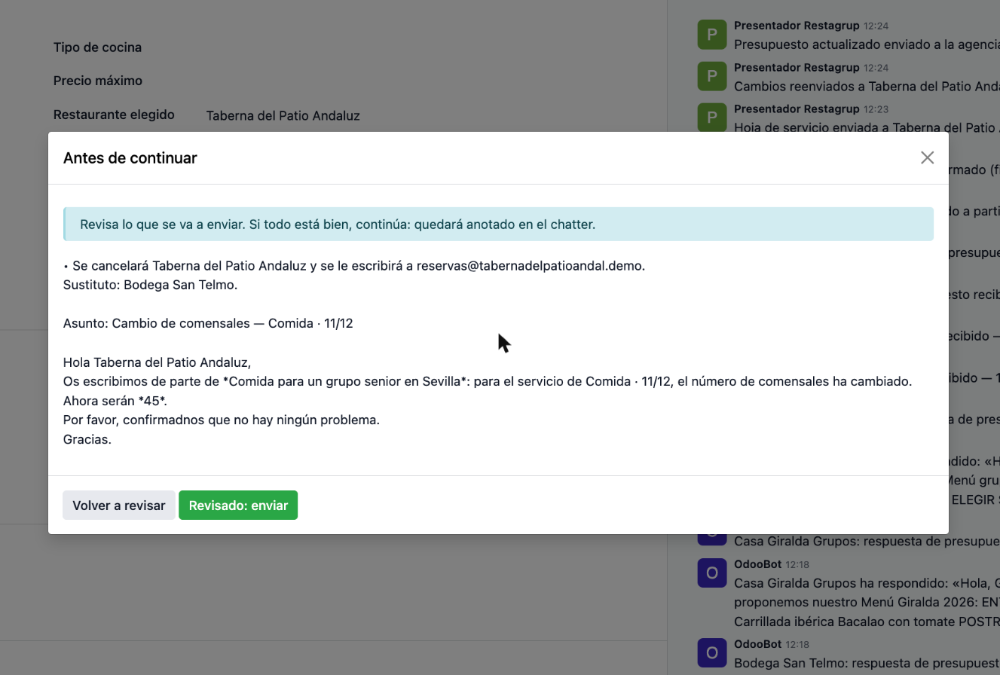
7 · Antes del servicio
7.1 Datos por cerrar Solo en desarrollo
Lead → pestaña Eventos → columna Datos por cerrar
Cada evento lleva lo que suele faltar al acercarse el servicio: menú definitivo (cuenta si está en la línea elegida o en el presupuesto), contacto del guía, intolerancias o alergias (o la casilla «Sin intolerancias») y comensales definitivos. La columna muestra lo que queda. Cuando faltan los días fijados en A1 (7 por defecto), Odoo deja un aviso interno al responsable (actividad o nota), una sola vez por grupo, sin escribir a nadie de fuera. Si el grupo no tiene responsable, usa el usuario de alertas; si tampoco lo hay, deja una nota en el chatter.
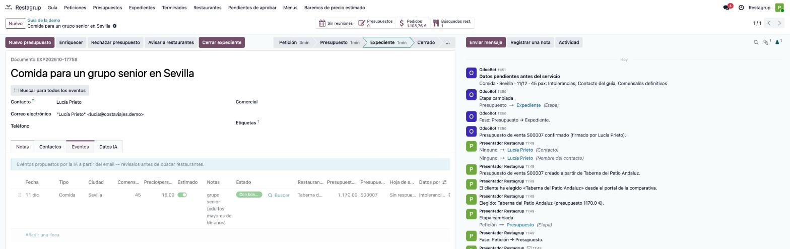
7.2 Cerrar el expediente Solo en desarrollo
Lead → Cerrar expediente
Cuando el último servicio ha terminado y el pago está recibido, ciérralo: el grupo pasa a Terminados. El cortafuegos avisa si falta el pago o el último servicio aún no ha terminado.
Parte C — Casos prácticos
Qué hacer en cada situación. Los números remiten a los pasos de la parte B.
C1. Grupo sencillo: un evento, restaurante y presupuesto normales
Llega la petición (1.1) → revisa Datos IA (1.2) → Buscar (2.1) → Pedir presupuesto a 3 o 4 candidatos (3.1) → la respuesta llega sola (3.2) → Confirmar importes (3.3) → Elegir (3.5) → Crear presupuesto de venta (4.3) → enviar a la agencia → firma (5.1) → Enviar hojas de servicio (5.2).
C2. Un correo con varios eventos (ciudades o fechas distintas)
Revisa y corrige los borradores de la pestaña Eventos (1.3). Usa «Buscar para todos los eventos» o busca evento a evento. Cada evento elige su restaurante y se acumula en el mismo presupuesto (4.4).
C3. La petición llega incompleta (falta fecha, ciudad o comensales)
No hace falta hacer nada: Odoo prepara el correo a la agencia pidiendo solo lo que falta (1.4). Apruébalo en Pendientes de aprobar (D1). Cuando la agencia contesta, el lead se rellena solo. Tras dos peticiones sin éxito, lo gestiona una persona.
C4. La agencia no da presupuesto
El evento muestra un precio por persona «Estimado» según los baremos (1.5). Trabaja con él y cámbialo cuando se sepa el real. Si la agencia es de más nivel (cena de empresa, menú ejecutivo), pide el presupuesto a la agencia.
C5. Un restaurante no responde
A los 3 días la tarjeta avisa y Odoo prepara un recordatorio (3.4). Aprueba el recordatorio o pulsa «Reenviar petición». Si sigue sin responder, pídele presupuesto a otro candidato.
C6. El restaurante responde por teléfono o WhatsApp
En la tarjeta pulsa «Registrar presupuesto», escribe o pega el texto, «Extraer con IA» si quieres, revisa y «Registrar» (3.3).
C7. La IA propone un importe distinto del que dijo el restaurante
No lo confirmes. Abre «Registrar presupuesto», corrige el importe y registra: queda anotado como corregido en la actividad IA (D3).
C8. Restaurante nuevo sin ficha completa o sin cuenta bancaria
La tarjeta muestra «Ficha incompleta». Pulsa «Pedir datos que faltan», aprueba el correo, y cuando el restaurante conteste pulsa «Aplicar» en los datos propuestos por la IA (2.5).
C9. Cliente nuevo: no enseñar los nombres de los restaurantes
En la búsqueda quita «Restaurante visible» y envía la comparativa (4.1): saldrán «Opción 1, 2, 3». La agencia elige con «Elijo este» y tú creas el presupuesto de venta.
C10. La agencia no contesta al presupuesto
Mira «Presupuestos sin respuesta» (4.6). A los 14 días antes del servicio Odoo prepara el recordatorio (aprobación en D1). Si responde que no viaja, ve a C11.
C11. El grupo no sale
En el presupuesto pulsa «Grupo no sale» (solo si está en borrador o enviado). Cancela el presupuesto, marca el lead como perdido, da por canceladas las peticiones abiertas a restaurantes y deja en la cola los avisos de cancelación. Si el presupuesto ya estaba confirmado, usa el flujo de cancelación del restaurante (C15).
C12. La agencia cambia el número de comensales
Actualiza el evento y el presupuesto. Pulsa «Reenviar cambios» (6.2): el resumen «47 → 51» va a los restaurantes y a la agencia. Si el cambio supera el porcentaje de A1, el restaurante debe volver a confirmar (6.3).
C13. La agencia cambia la fecha o la hora
Actualiza fecha u hora en la línea. «Reenviar cambios»; la hoja vuelve a «pendiente de confirmar» siempre (6.3). Revisa el texto en la ventana «Antes de continuar» (6.6).
C14. Avisar a todos los restaurantes de algo (sin tocar el presupuesto)
En el lead, «Avisar a restaurantes» con la plantilla que corresponda (6.4). Sigue las respuestas en Avisos enviados.
C15. Un restaurante cancela y hay que sustituirlo
«Cancelar / cambiar restaurante» en la búsqueda del evento: motivo, sustituto con presupuesto, precio nuevo o mantener el del cliente, y aviso al cancelado (6.5). La agencia no vuelve a firmar; si procede, avísala tú.
C16. La agencia añade un evento a un grupo ya firmado
Añade el evento, busca y elige restaurante, y «Crear presupuesto de venta»: Odoo crea un presupuesto adicional que la agencia firma aparte (4.4).
C17. Llega un correo que no es una petición (factura, incidencia, spam)
Aparece en «Correos por revisar» con su categoría y un resumen de la IA (D4). Léelo y pulsa «Marcar como revisado»; si en realidad es una petición, «Crear lead».
C18. Se acerca el servicio y faltan datos
Recibes un aviso interno (7.1). Completa menú definitivo, intolerancias, contacto del guía y comensales definitivos en el evento. Cuando está todo y llegó el pago, marca como pagado, imprime el bono (5.5) y, terminado el servicio, cierra el expediente (7.2).
Parte D — Pantallas de control
Colas y listas que dicen qué necesita atención.
D1. Pendientes de aprobar
Restagrup → Pendientes de aprobar
Con el modo «Con aprobación», los correos que genera el sistema no salen solos. Cada uno tiene un tipo — Recordatorio a restaurante, Petición de datos de ficha, Petición de datos a la agencia, Recordatorio a la agencia, Aviso de grupo cancelado —, un motivo y estado (Pendiente, Enviado, Descartado, Error). Abre uno: el mensaje es editable antes de aprobar. Pulsa Aprobar y enviar o Descartar. Si al aprobar ya no procede (por ejemplo, el restaurante ya respondió o ya se le recordó), Odoo no lo envía: pasa a Descartado con el aviso «Ya no procede: la petición ha cambiado». Pasar el ajuste a Automático los envía solos.
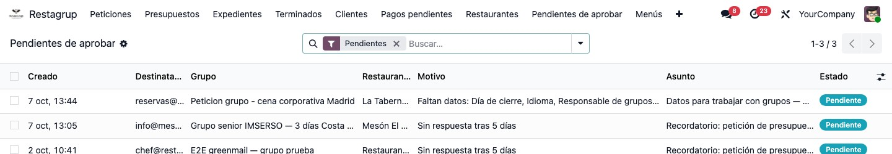
D2. Clientes
Restagrup → Clientes
Un grupo por fila: eventos, restaurantes elegidos (con su evento), total presupuestado (sin IVA), hojas de servicio confirmadas N/M y avisos sin respuesta. Al abrir una fila se llega al lead con sus pestañas Eventos y Avisos.
D3. Actividad IA
Restagrup → Actividad IA → Panel y Registro
El Panel resume los últimos 7 días (correos procesados, propuestas revisadas, % confirmadas sin corregir, errores) y los correos pendientes de aprobar ahora, con botones: Ver toda la actividad, Ver propuestas revisadas, Ver errores, Ver pendientes de aprobar. El Registro guarda cada propuesta de la IA: acción, tipo, estado (pendiente de revisar, confirmado, corregido, descartado, automático sin revisión, error), proveedor y modelo, texto leído, propuesta, quién la revisó y cuándo; Abrir el origen lleva al lead, búsqueda o correo.
Las propuestas pendientes llegan al comercial como actividad (contador del reloj) y como aviso emergente que se queda hasta atenderlo. Si la IA falla o detecta una incidencia en un correo, se crea una actividad para el responsable del grupo o, si no tiene, para el usuario de alertas.
D4. Correos por revisar
Restagrup → Correos por revisar
Los correos que la IA no clasificó como petición nueva y no pudo enlazar a un grupo: Cambio de un grupo, Respuesta de agencia, Factura, Incidencia, Otro, con remitente, asunto y un resumen de la IA. Decide qué hacer con cada uno: Marcar como revisado o, si en realidad es una petición, Crear lead. No crean nada por sí solos.
D5. Listas por fase y por documento Solo en desarrollo
Restagrup → Peticiones · Presupuestos · Expedientes · Terminados · Pagos pendientes
Cada lista muestra documento (PET/PRE/EXP + número), agencia, referencia del grupo, nº de servicios, fecha y población del primer servicio, restaurante, comensales, comercial y estado. Pagos pendientes añade las fechas de pago.
Parte E — Referencia
E1. Menús del módulo
| Menú (Restagrup →) | Para qué |
|---|---|
| Restaurantes · Buscar restaurantes · Menús | Fichas, búsquedas y menús por restaurante |
| Peticiones · Presupuestos · Expedientes · Terminados · Pagos pendientes Solo en desarrollo | Listas por fase del grupo y cobros |
| Clientes | Resumen de cada grupo |
| Pendientes de aprobar · Presupuestos sin respuesta · Correos por revisar · Actividad IA (Panel, Registro) | Control (parte D) |
| Avisos enviados · Plantillas de aviso | Avisos a restaurantes |
| Tipos de evento · Motivos de cancelación | Listas ampliables |
| Baremos de precio estimado · Cortafuegos Solo en desarrollo | Configuración de negocio |
E2. Campos de la ficha del restaurante
| Bloque | Campos |
|---|---|
| General | Es restaurante · Ya hemos trabajado con este restaurante (calculado desde hojas de servicio reales) · Valoración interna (Nos gustó / Neutral / No repetir) · Notas internas · Tipo de cocina · Nivel de precio · Apto corporativo / escolar / familiar · Contacto directo · Datos de Google (Place ID, rating, nº de reseñas) |
| Datos de grupo | Aforo (grupos) · Parking de autobús · Día de cierre · Idioma · Gratuidades · Responsable de grupos · Móvil del responsable · Canal preferido (Email / WhatsApp) · Cuenta bancaria · «Ficha incompleta · faltan…» |
| Margen | Margen propio (casilla) y Margen de beneficio (%) |
| Menús | Menús del restaurante y su número. Hojas de servicio (pedidos de compra) del restaurante. |
E3. Estados y etiquetas
| Dónde | Valores |
|---|---|
| Etiqueta de un candidato | Visto → Interesado → Solicitado → Presupuesto recibido; también Descartado y Cancelado. «Elegido» es aparte (★). |
| Barra de progreso de la búsqueda | Buscando → Presupuestos pedidos → Presupuestos recibidos → Elegido → Presupuesto de venta creado |
| Respuesta del restaurante (hoja de servicio) | Aceptado · Rechazado · Falta información · Incidencia grave · No está claro |
| Aviso a restaurante | Pendiente · Respondido |
| Correo pendiente de aprobar | Pendiente · Enviado · Descartado · Error |
| Registro de IA — estado | Pendiente de revisar · Confirmado · Corregido · Descartado · Automático (sin revisión) · Error |
| Registro de IA — tipo | Extracción de datos del lead · Importe de un presupuesto · Datos de la ficha de un restaurante · Clasificación de un correo · Enlace de un correo a un grupo · Datos que aporta la agencia · Respuesta a una hoja de servicio |
| Fase del grupo Solo en desarrollo | Petición (PET) → Presupuesto (PRE) → Expediente (EXP) → Cerrado |
| Categoría de un correo entrante | Petición nueva · Cambio de un grupo · Respuesta de agencia · Factura · Incidencia · Otro |
E4. Correos y avisos automáticos
| Qué | Cuándo | A quién | Pasa por aprobación |
|---|---|---|---|
| Petición de presupuesto | Al pulsar «Pedir presupuesto» | Restaurante | No (acción manual) |
| Recordatorio de presupuesto sin respuesta | Diario; a los 3 días, una vez por petición | Restaurante | Sí |
| Petición de datos de ficha | Botón «Pedir datos que faltan» | Restaurante | Sí |
| Petición de datos a la agencia | Petición incompleta (máx. 2) | Agencia | Sí |
| Recordatorio a la agencia | Diario; faltan N días para el servicio (14) | Agencia | Sí |
| Aviso de grupo cancelado | «Grupo no sale» | Restaurantes con petición abierta | Sí |
| Aviso a restaurantes / cambio de restaurante | Asistentes manuales | Restaurantes | No; con revisión previa Solo en desarrollo |
| Reenviar cambios | Botón manual | Restaurantes y agencia | No; con revisión previa Solo en desarrollo |
| Aviso de datos pendientes antes del servicio Solo en desarrollo | Diario; faltan N días (7) | Interno (responsable) | No sale nada fuera |
Las tres tareas programadas (recordatorio a restaurantes, recordatorio a agencias y aviso de datos pendientes) se ejecutan una vez al día.
E5. Cortafuegos: comprobaciones Solo en desarrollo
| Antes de… | Qué se comprueba |
|---|---|
| Pasar a Presupuesto | La agencia tiene contacto (cliente o email) |
| Cada servicio tiene ciudad, fecha y comensales | |
| Hay al menos un restaurante con presupuesto o menú que ofrecer | |
| Pasar a Expediente | Hay restaurante elegido |
| Los servicios tienen comensales | |
| Cerrar expediente | El pago está marcado como recibido |
| El último servicio ya ha terminado | |
| Confirmación a la agencia | El restaurante ha confirmado por escrito |
| El restaurante tiene cuenta bancaria (prepago) | |
| La compañía tiene cuenta bancaria para el cobro | |
| Confirmación al restaurante | El servicio tiene fecha y hora |
| El restaurante tiene email | |
| Enviar la propuesta a la agencia (revisión) | Revisar restaurantes, precios y condiciones |
| Escribir al restaurante (revisión) | Revisar a qué restaurante y con qué texto se escribe (avisos, cambios y reenvíos) |
E6. Qué revisa una persona y límites conocidos
- Siempre una persona (con «Con aprobación»): todo correo que sale a restaurantes o agencias; los importes propuestos por la IA; los datos de ficha que lee la IA.
- Sin revisar: una petición completa que la IA clasifica y rellena; el enlace de un cambio cuando el grupo se identifica con seguridad.
- Pendiente de decidir: correos en varios idiomas, canal WhatsApp, facturación y pagos a restaurantes desde Odoo.
Límites conocidos, para no esperarlos:
- Respuestas a avisos: solo se enlazan al aviso si el restaurante contesta al mismo correo.
- Un restaurante elegido en dos eventos del mismo presupuesto recibe un aviso por evento.
- Presupuesto ya confirmado: al cancelar sin sustituto la línea queda a 0 marcada «CANCELADO» y Odoo no avisa a la agencia.
- Cambio de restaurante: las líneas de menú del cancelado pasan a una sola línea al precio del sustituto; no se reconstruyen los menús.
- Presupuesto creado por otro comercial: puede no verse por la regla «solo mis pedidos» y crearse uno nuevo en lugar de añadir al existente.
- «Imprimir propuesta» no muestra la nota de margen ni agrupa por evento.
- Los cambios de la agencia no se aplican solos al evento (6.1).
- El buscador no filtra por tipo de cocina (Google no lo permite).
- «Firmado» significa presupuesto en estado confirmado.